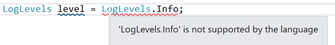
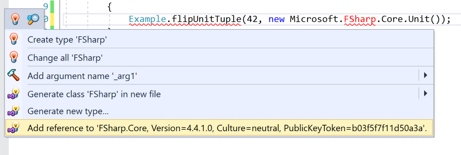
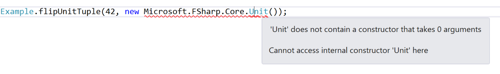
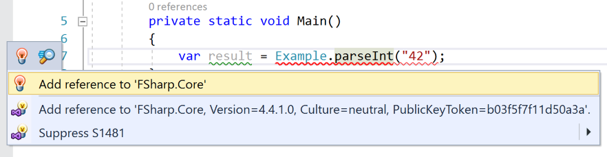
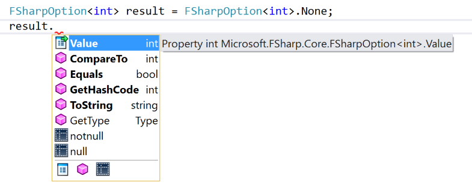
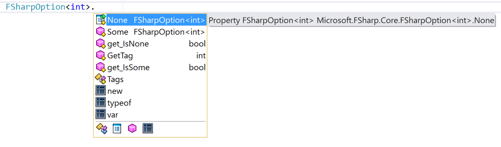
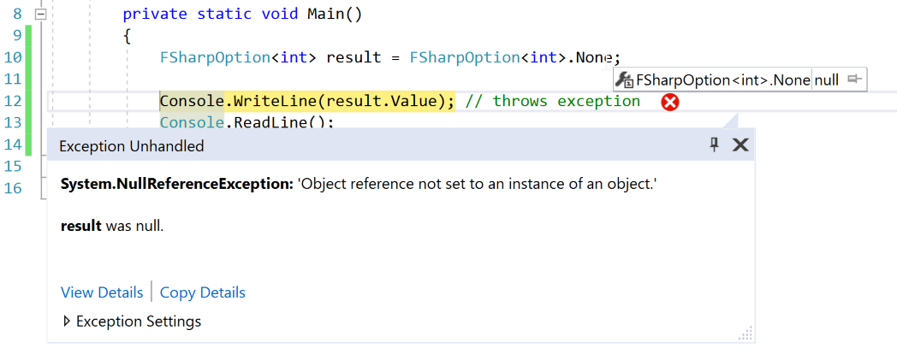
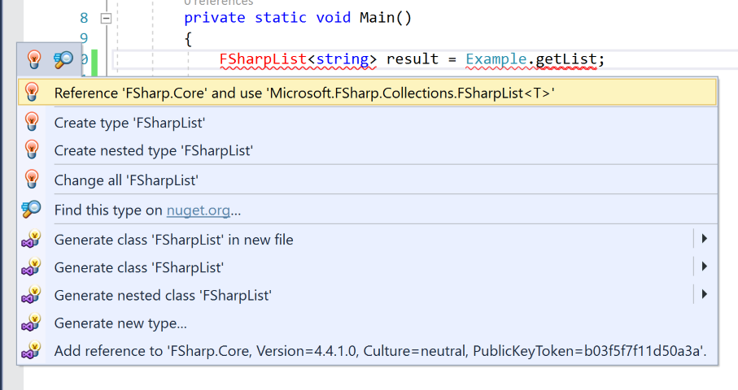

Calling F# Code in a C# Project
IntroductionGo to Introduction section
F# compiles down into the same IL code as VB and C#. This means that you can have a solution that contains both C# and F# projects. There are lots of guidelines on how to write F# code that is compatible with C# projects. You can find the official ones here.
But why are there guidelines? Why do we have to write F# differently depending on what language is consuming it? What happens if you just write F# code without following the guidelines and then try and use it from C#?
F# is a multi-paradigm language. It can be used to write functional or object orientated code. OO code in F# (such as classes or interfaces) can be accessed just fine from C#.
The following F# code creates a class that inherits from an interface:
namespace Interoperability.FSharp
type ILogin =
abstract member IsValid: bool
type Login(id:int, username:string, password:string) =
member this.Id = id
member this.Username = username
member this.Password = password
interface ILogin with
member this.IsValid = this.Username = "connel" && this.Password = "password"
This code is easy to consume from C#:
using System;
using Interoperability.FSharp;
namespace Interoperability.CSharp
{
internal static class Program
{
private static void Main()
{
Login login = new Login(42, "connel", "password");
PrintWelcomeMessage(login);
Console.ReadLine();
}
private static void PrintWelcomeMessage(ILogin login)
{
if (login.IsValid)
{
Console.WriteLine("Login successful");
}
else
{
Console.WriteLine("Failed to log in");
}
}
}
}
This is because C# (obviously) already has support for classes and interfaces. But what about some of the language constructs in F# that simply do not exist in C#?
The rest of this article will cover what some of these constructs look like when they are exposed to C# projects without being wrapped up in an OO friendly class like the one above. This article is not a guide to the recommended best practices, but instead aims to offer some insight into what F# compiles down to and justifies why the guidelines are needed. This article covers F# 4.1 and C# 7.
NamespacesGo to Namespaces section
F# projects do not have a default namespace option in their project settings. If you do not put a module in a namespace, then it becomes available globally in any C# projects that reference its project.
The following F# function:
module Example
let add num1 num2 = num1 + num2
Can be consumed in C# like so:
using System;
namespace Interoperability.CSharp
{
internal static class Program
{
private static void Main()
{
Console.WriteLine(Example.add(1, 2)); //prints 3
}
}
}
Note that the C# code does not require a using statement to use the F# Example module. If we add a namespace to the module:
namespace Interoperability.FSharp
module Example =
let add num1 num2 = num1 + num2
Then a using statement is required in the C# project:
using System;
using Interoperability.FSharp;
namespace Interoperability.CSharp
{
internal static class Program
{
private static void Main()
{
Console.WriteLine(Example.add(1, 2)); //prints 3
}
}
}
ModulesGo to Modules section
As shown in the namespace section of this article, modules are exposed to C# as static classes. If you want to replicate being able to open a module from C#, you can use a using static statement like so:
using System;
using static Interoperability.FSharp.Example;
namespace Interoperability.CSharp
{
internal static class Program
{
private static void Main()
{
Console.WriteLine(add(1, 2)); //prints 3
}
}
}
ValuesGo to Values section
Modules can contain values:
module Example
let message = "This is an example getter"
These values are exposed to C# as properties with a getter:
public static class Example
{
public static string message { get; }
}
Modules can also contain mutable values:
module Example
let mutable message = "This is an example getter"
Mutable values are exposed to C# as properties with a getter and setter:
public static class Example
{
public static string message { get; set; }
}
FunctionsGo to Functions section
As shown in the modules section, F# functions are exposed as you'd expect. In F#, functions are curried and can be partially applied. When accessing an F# function from C#, this functionality is not available. You must provide all parameters to a function when calling it.
RecordsGo to Records section
F# records are exposed to C# as classes that take in all of their properties in their constructor. The following F# record contains a string, an int and an IEnumerable<string>:
type Person = {
id: int
name: string
friends: string seq
}
This record is exposed to C# as a class with the following signature1:
public sealed class Person : IEquatable<Person>, IStructuralEquatable, IComparable<Person>, IComparable, IStructuralComparable
{
public Person(int id, string name, IEnumerable<string> friends);
public int id { get; }
public string name { get; }
public IEnumerable<string> friends { get; }
public sealed override int CompareTo(Person obj);
public sealed override int CompareTo(object obj);
public sealed override int CompareTo(object obj, IComparer comp);
public sealed override bool Equals(object obj, IEqualityComparer comp);
public sealed override bool Equals(Person obj);
public sealed override bool Equals(object obj);
public sealed override int GetHashCode(IEqualityComparer comp);
public sealed override int GetHashCode();
public override string ToString();
}
Records have the following characteristics when used from C#:
- All properties are readonly (getters only)
- Properties are populated via the constructor
- Various comparison interfaces are implemented for you
This means records work exactly as you would expect in C#:
private static void Main()
{
Person person1 = new Person(42, "connel", new []{"bob"});
Console.WriteLine(person1.id); //prints 42
Console.WriteLine(person1.name); //prints connel
Person person2 = new Person(42, "connel", new[] { "bob" });
Console.WriteLine(person1.Equals(person2) ? "same" : "not same"); //prints same
Console.ReadLine();
}
TuplesGo to Tuples section
BackgroundGo to Background section
A very brief history of tuples types in .NET:
- F# has had support for tuples since its inception. It uses the System.Tuple class.
- Recently, C#7 added support for tuples. To do this it created a new struct type called System.ValueTuple.
- F# 4.1 recently added support for the ValueTuple.
According to the MSDN docs for the ValueTuple, there are three main differences between the Tuple and ValueTuple:
| Tuple | ValueTuple |
|---|---|
| Class | Struct |
| Immutable | Mutable |
| Items are properties | Items are fields |
This article explains the design decisions C# took when creating the ValueTuple.
F# TupleGo to F# Tuple section
Let's see how F# tuples (System.Tuple) can be used in C#.
The following F# function takes in a tuple and returns a tuple:
module Example
let flipFSharpTuple (val1, val2) =
(val2, val1)
It can be consumed in C# like so:
private static void Main()
{
(string result1, string result2) = Example.flipFSharpTuple("a", "b");
Console.WriteLine($"{result1} {result2}"); //prints b a
Console.ReadLine();
}
The following F# function takes in and returns a tuple that contains a tuple:
module Example
let flipFSharpInnerTuple (val1, (val2, val3)) =
(val1, (val3, val2))
It can be consumed in C# like so:
private static void Main()
{
(string result1, (string result2, string result3)) = Example.flipFSharpInnerTuple("a", Tuple.Create("b", "c"));
Console.WriteLine($"{result1} {result2} {result3}"); //prints a c b
Console.ReadLine();
}
Below is the code that the nested example above gets compiled down to:
using System;
namespace Interoperability.CSharp
{
internal static class Program
{
private static void Main()
{
string str1;
Tuple<string, string> tuple;
Example
.flipFSharpInnerTuple<string, string, string>("a", Tuple.Create<string, string>("b", "c"))
.Deconstruct<string, Tuple<string, string>>(out str1, out tuple);
string str2;
string str3;
tuple.Deconstruct<string, string>(out str2, out str3);
Console.WriteLine(string.Format("{0} {1} {2}", (object) str1, (object) str2, (object) str3));
Console.ReadLine();
}
}
}
- The first element of the tuple is deconstructed into out a variable called
str1. - The second element of the tuple (which is also a tuple) is deconstructed into out a variable called
tuple. - Then each element of nested tuple is deconstructed into variables called
str2andstr3
C# TupleGo to C# Tuple section
Let's see how C# tuples (System.ValueTuple) created in F# can be used in C#. To create a C# tuple in F# the struct keyword is used.
The following F# function takes in a tuple and returns a tuple:
module Example
let flipCSharpTuple struct(val1, val2) =
struct(val2, val1)
It can be consumed in C# like so:
private static void Main()
{
(string result1, string result2) = Example.flipCSharpTuple(("a", "b"));
Console.WriteLine($"{result1} {result2}"); //prints b a
Console.ReadLine();
}
The following F# function takes in and returns a tuple that contains a tuple:
module Example
let flipCSharpInnerTuple struct(val1, struct(val2, val3)) =
struct(val1, struct(val3, val2))
It can be consumed in C# like so:
private static void Main()
{
(string result1, (string result2, string result3)) = Example.flipCSharpInnerTuple(("a", ("b", "c")));
Console.WriteLine($"{result1} {result2} {result3}"); //prints a c b
Console.ReadLine();
}
Below is the code that the nested example above gets compiled down to:
private static void Main()
{
ValueTuple<string, ValueTuple<string, string>> valueTuple1 = Example.flipCSharpInnerTuple<string, string, string>(new ValueTuple<string, ValueTuple<string, string>>("a", new ValueTuple<string, string>("b", "c")));
ValueTuple<string, string> valueTuple2 = valueTuple1.Item2;
Console.WriteLine(string.Format("{0} {1} {2}", (object) valueTuple1.Item1, (object) valueTuple2.Item1, (object) valueTuple2.Item2));
Console.ReadLine();
}
- The outer tuple is placed in a variable called
valueTuple1 - The inner tuple is pulled out into its own variable called
valueTuple2 - The elements from inside the tuples are simply accessed from their tuple e.g.
valueTuple1.Item1 - No deconstructors are used like the F# tuples
I'm sure it will come as no surprise to you that C# tuples work better in C# than F# tuples.
Discriminated UnionsGo to Discriminated Unions section
There are two types of discriminated unions in F#. Those that contain compile-time constant values and those that contain types.
Cases With ValuesGo to Cases With Values section
Discriminated unions that contain values are compiled down to enums and are therefore easy to consume in C#.
The following F# type:
type LogLevels =
| Error = 1
| Warning = 2
| Info = 3
Is compiled down to the following enum:
public enum LogLevels
{
Error = 1,
Warning = 2,
Info = 3
}
F# has support for using chars as values but these types cannot be used in C#. The following F# type:
type LogLevels =
| Error = 'a'
| Warning = 'b'
| Info = 'c'
Gives the following error in C#:

Cases With TypesGo to Cases With Types section
The most common form of discriminated unions however, have cases that are either empty or contain types.
The following F# discriminated union type:
type LogLevels =
| Error
| Warning
| Info
Is exposed to C# as a class with the following signature:
public sealed class LogLevels : IEquatable<LogLevels>, IStructuralEquatable, IComparable<LogLevels>, IComparable, IStructuralComparable
{
public static LogLevels Error { get; }
public static LogLevels Warning { get; }
public static LogLevels Info { get; }
public bool IsInfo { get; }
public int Tag { get; }
public bool IsError { get; }
public bool IsWarning { get; }
public sealed override int CompareTo(LogLevels obj);
public sealed override int CompareTo(object obj);
public sealed override int CompareTo(object obj, IComparer comp);
public sealed override bool Equals(object obj);
public sealed override bool Equals(object obj, IEqualityComparer comp);
public sealed override bool Equals(LogLevels obj);
public sealed override int GetHashCode(IEqualityComparer comp);
public sealed override int GetHashCode();
public override string ToString();
public static class Tags
{
public const int Error = 0;
public const int Warning = 1;
public const int Info = 2;
}
}
As you can see from the signature above, the class exposes three LogLevels properties (Error, Warning and Info). These properties return instances of the LogLevel. This class is sealed so nothing can inherit off it, this means we know that the objects returned by these properties are of the type LogLevels and not a sub-class.
C# 7 has introduced very basic pattern matching that allows us to use the switch statement to switch on an object's type. Unfortunately, we cannot use C#'s new pattern matching with this type, as each case is not given its own type to match onto.
This means we switch using the tag instead. This is less elegant:
private static void Main()
{
LogLevels level = LogLevels.Info;
switch (level.Tag)
{
case LogLevels.Tags.Error:
Console.WriteLine("error");
break;
case LogLevels.Tags.Warning:
Console.WriteLine("warning");
break;
case LogLevels.Tags.Info:
Console.WriteLine("info"); //prints info
break;
default:
throw new ArgumentOutOfRangeException();
}
}
Now let's look at the following F# type:
type LogLevels =
| Error of int
| Warning of struct(int * string)
| Info of string
This type is exposed to C# as a class with the following signature:
public abstract class LogLevels : IEquatable<LogLevels>, IStructuralEquatable, IComparable<LogLevels>, IComparable, IStructuralComparable
{
public bool IsInfo { get; }
public bool IsWarning { get; }
public bool IsError { get; }
public int Tag { get; }
public static LogLevels NewError(int item);
public static LogLevels NewInfo(string item);
public static LogLevels NewWarning((int, string) item);
public sealed override int CompareTo(LogLevels obj);
public sealed override int CompareTo(object obj);
public sealed override int CompareTo(object obj, IComparer comp);
public sealed override bool Equals(object obj);
public sealed override bool Equals(object obj, IEqualityComparer comp);
public sealed override bool Equals(LogLevels obj);
public sealed override int GetHashCode();
public sealed override int GetHashCode(IEqualityComparer comp);
public override string ToString();
public static class Tags
{
public const int Error = 0;
public const int Warning = 1;
public const int Info = 2;
}
public class Warning : LogLevels
{
public (int, string) Item { get; }
}
public class Error : LogLevels
{
public int Item { get; }
}
public class Info : LogLevels
{
public string Item { get; }
}
}
This time the compiler has created sub-classes for us, so C# pattern matching does work on this type:
private static void Main()
{
LogLevels errorLevel = LogLevels.NewError(42);
LogLevels warningLevel = LogLevels.NewWarning((42, "message"));
LogLevels infoLevel = LogLevels.NewInfo("message");
switch (infoLevel)
{
case LogLevels.Error e:
Console.WriteLine($"error {e.Item}");
break;
case LogLevels.Warning w:
Console.WriteLine($"warning {w.Item.Item1} {w.Item.Item2}");
break;
case LogLevels.Info i:
Console.WriteLine($"info {i.Item}"); //prints info message
break;
default:
throw new ArgumentOutOfRangeException();
}
Console.ReadLine();
}
Somewhat annoyingly, the union case's contents are put inside an Item property. This isn't as succinct as an F# match expression, where the value is unpacked into a local variable for you. I guess this is more an issue with the C# switch statement than it is with the discriminated union itself.
It would be much more reasonable if discriminated unions with empty cases were either compiled down to enums or were given empty sub-classes. Empty sub-classes would be better as it would cover discriminated unions that have both empty and none-empty cases.
UnitGo to Unit section
Functions that return unit, return void in C#. The following pointless F# code takes in unit and returns unit:
module Example
let run () = ()
This function is exposed to C# as a method that has no parameters and returns void:
public static class Example
{
public static void run();
}
So far so good. But what happens if we write a really (really) pointless function that takes in a tuple (that contains a value and unit) and then returns the same tuple flipped:
module Example
let flipUnitTuple (val1, ()) =
struct((), val1)
To consume this function, we are asked to reference FSharp.Core:

Before finding out that we cannot instantiate unit anyway:

Instead of constructing the unit type however, we can simply pass in null like so2:
private static void Main()
{
(Unit empty, int result) = Example.flipUnitTuple(42, null);
Console.WriteLine(result); //prints 42
Console.ReadLine();
}
Higher Order FunctionsGo to Higher Order Functions section
The following F# module contains a function that takes in another function as its second parameter:
module Example
let pipe i mapper =
mapper(i)
It is exposed to C# as a class with the following signature:
public static class Example
{
public static b pipe<a, b>(a i, FSharpFunc<a, b> mapper);
}
Unfortunately, this function does not expose itself to C# in the way you'd expect. Instead of finding the C# friendly Func type as the second parameter, we find a new type called FSharpFunc. Consuming this function in C# is not pretty:
private static void Main()
{
int result = Example.pipe(42, FSharpFunc<int, int>.FromConverter(input => input * 2));
Console.WriteLine(result); //prints 84
Console.ReadLine();
}
We have to use a converter to convert a C# Func type into the equivalent FSharpFunc type. I'm sure there are good architectural reasons why they both have different func types, but it sure would be nice if the compiler did the heavy lifting here for us, like it does with the unit type and void.
OptionGo to Option section
The following F# module contains a function that returns an option type:
module Example
open System
let parseInt x =
match Int32.TryParse(x) with
| success, result when success -> Some(result)
| _ -> None
It is exposed to C# as a class with the following signature:
public static class Example
{
public static Microsoft.FSharp.Core.FSharpOption<int> parseInt(string x);
}
To consume this function in C# we must reference FSharp.Core - just like we did for the unit type:

We can assign values to option types without a hitch in C#:
private static void Main()
{
FSharpOption<int> result1 = Example.parseInt("42");
FSharpOption<int> result2 = 42; //implicit operator
FSharpOption<int> result3 = FSharpOption<int>.Some(42);
FSharpOption<int> result4 = FSharpOption<int>.None;
Console.WriteLine(result1); //prints Some(42)
Console.WriteLine(result2); //prints Some(42)
Console.WriteLine(result3); //prints Some(42)
Console.WriteLine(result4); //prints nothing
Console.ReadLine();
}
Unfortunately, options become pretty useless once we want to access the values we've assigned to them. The option type does not expose much to C# 7 projects.
Below is a screenshot of Intellisense when using an instance of the option class:

Below is a screenshot of Intellisense when using static methods in the option class:

One surprising thing I found was that the None property returned null.

Due to the lack of functionality exposed by the option type to C#, it becomes awkward to use:
private static void Main()
{
Print(FSharpOption<int>.None); //prints value is: none
Print(Example.parseInt("42")); //prints value is: 42
Console.ReadLine();
}
private static void Print(FSharpOption<int> item)
{
if (FSharpOption<int>.get_IsNone(item))
{
Console.WriteLine("value is: none");
}
else
{
Console.WriteLine($"value is: {item.Value}");
}
}
As you can see you lose all the benefits of the option type in C#. If you want use something like the option type in C#, you'll have to stick with one of the already well established NuGet packages like Strilanc.Value.May.
CollectionsGo to Collections section
There are three main types of collections in F#.
SeqGo to Seq section
The following F# module contains a function that returns seq:
module Example
let getSeq = seq {
yield "a"
}
It is exposed to C# as a class with the following signature:
public static class Example
{
public static IEnumerable<string> getSeq { get; }
}
Seq is an alias for IEnumerable so is perfectly consumable from C#.
ListGo to List section
The following F# module contains a function that returns an F# list:
module Example
let getList = ["a"]
It is exposed to C# as a class with the following signature:
public static class Example
{
public static FSharpList<string> getList { get; }
}
As you can see, F# lists are not the same as C# lists. F# lists are immutable linked lists, so they differ in their implementation to C# lists.
To consume this function in C# we must reference FSharp.Core - just like we did for the unit and option types:

We can then consume the list like so:
private static void Main()
{
FSharpList<string> result = Example.getList;
foreach (string s in result)
{
Console.WriteLine(s); //prints a
}
Console.WriteLine(result[0]); //prints a
Console.ReadLine();
}
F# lists are easy to consume from C#, although it is always better practice to expose IEnumerables to your C# projects. It is also worth mentioning that, as of F# 4.1, the FSharpList type also implements the IReadOnlyCollection interface, so that can be used instead. The following example demonstrates this:
private static void Main()
{
IReadOnlyCollection<string> result = Example.getList;
foreach (string s in result)
{
Console.WriteLine(s); //prints a
}
Console.WriteLine(result.ElementAt(0)); //prints a
Console.ReadLine();
}
The code above still requires a references to FSharp.Core. It would be much nicer to consume F# lists in C# if they were exposed using this more C# friendly interface. Just like how the seq type is exposed as the C# friendly IEnumerable interface.
If you want to return a C# List from an F# function, then you must return the ResizeArray3 type which acts as an alias to the C# list type.
ArrayGo to Array section
The following F# module contains a function that returns an F# array:
module Example
let getList = [|"a"|]
It is exposed to C# as a class with the following signature:
public static class Example
{
public static string[] getList { get; }
}
Arrays are the same in F# as in C# so they perfectly consumable from C#.
FootnotesGo to Footnotes section
-
Thanks to Haumohio Ltd in the comments for spotting a typo here. ↩
-
Thanks to vaskir (@kot_2010) on Twitter for pointing out that null can be used when a function takes in unit. ↩
-
Thanks to Stuart in the comments for pointing out the ResizeArray type. ↩